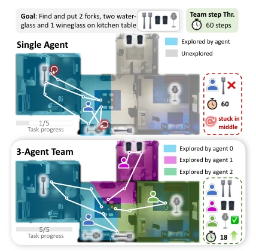
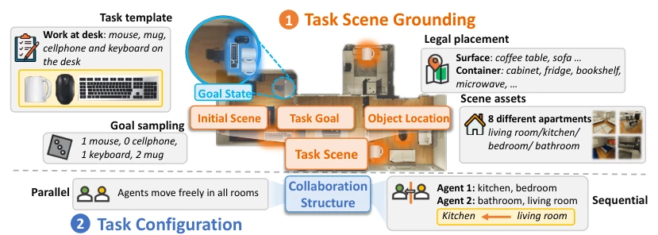
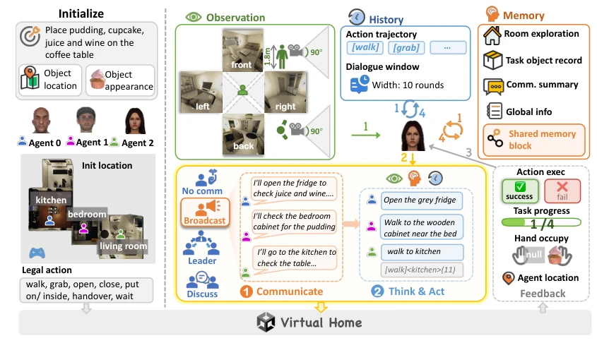
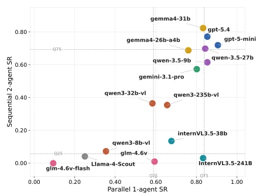
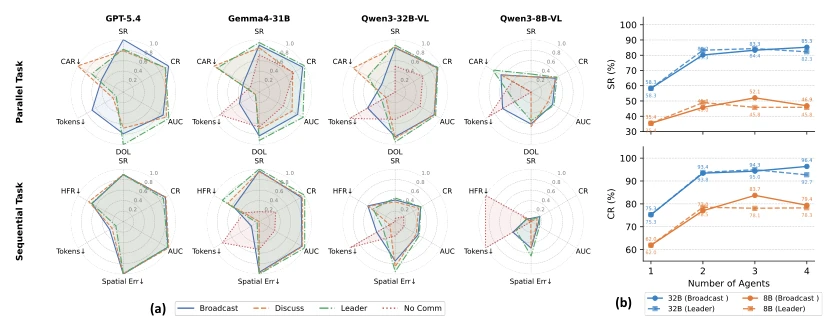
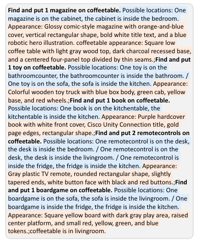
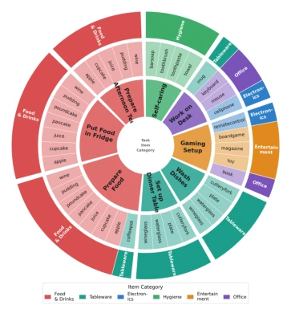
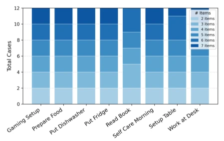
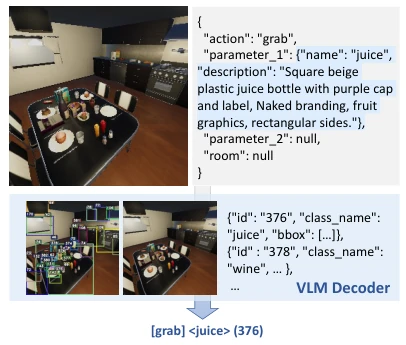
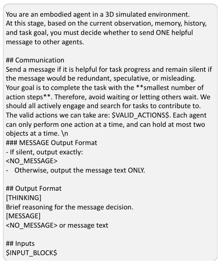

This paper provides a supplementary lesson on the "group chat" scenario for embodied AI, but do not expect it to directly solve the chaos of the real world. MECoBench indeed fills the gap in multimodal embodied multi-agent collaboration, as previously work was either single-agent or purely text-based interaction. The authors implemented "home collaboration" in VirtualHome, testing performance from 1 to 5 agents. The highlight lies in systematically deconstructing collaboration modes (centralized/decentralized) and communication mechanisms, finding that "more people do not necessarily mean better work," with 5 agents being more prone to collisions. However, limitations are obvious: VirtualHome is an old simulator, scenes are singular, team size limit is 5, still far from true "multi-robot". The conclusion states collaboration can resist noise, this is practical, but how exactly depends on whether the model is smart enough. Overall, it is a good benchmark test, but do not expect it to directly train a robot team capable of manual labor.
研究动机Motivation
现有 MLLM 研究多聚焦单智能体具身智能 (Yang et al., 2025; Liu et al., 2025)，但现实任务如家务常需多智能体协作。纯文本多智能体框架 (Schmidgall et al., 2025; Hong et al., 2024) 忽略了视觉感知和物理约束。现有具身基准 (Zhang et al., 2024a; Sun et al., 2025) 多依赖文本描述或预加工观测，无法捕捉感知不一致、空间冲突等具身特有失败模式。MECoBench 旨在解决视觉 grounded 环境下的协作机制黑盒问题，探究协作何时有效、为何有效。
Existing MLLM research predominantly focuses on single-agent embodied AI (Yang et al., 2025; Liu et al., 2025), yet real-world tasks such as household chores often require multi-agent collaboration. Pure text multi-agent frameworks (Schmidgall et al., 2025; Hong et al., 2024) overlook visual perception and physical constraints. Existing embodied benchmarks (Zhang et al., 2024a; Sun et al., 2025) mostly rely on text descriptions or pre-processed observations, failing to capture embodied-specific failure modes such as perception inconsistency and spatial conflicts. MECoBench aims to address the black-box problem of collaboration mechanisms in visual-grounded environments, investigating when collaboration is effective and why.
The framework is built overall based on VirtualHome, containing 96 task templates covering 8 categories of daily activities. Data construction is divided into two phases: scene grounding and collaboration configuration. Collaboration structures are divided into parallel (free access) and sequential (partitioned collaboration). The evaluation platform supports three collaboration modes: isolated (no communication), decentralized (broadcast/discussion), and centralized (Leader allocation). The evaluation flow is an iterative Observe-Communicate-Act process, where agents generate actions based on current observations, history, memory, and communication context. The innovation lies in introducing shared memory and a visual-enhanced Leader mechanism, contrasting with pure text communication. Task configurations support variable team sizes (1-5 agents) and different prior information (clean/noise/no prior), to control variables and analyze the balance between collaboration gains and coordination costs. Additionally, the platform supports multi-model evaluation, covering closed-source and open-source models, ensuring result generalization.
Evaluated 10+ models including GPT-5, Qwen, and Gemma. Metrics include SR, CR, efficiency, and collaboration quality (DOL, CAR). Findings indicate collaboration generally improves completion rates, but follows an inverted U-shaped trend with team size, with medium sizes performing best. Communication is indispensable, with decentralized approaches being more effective in large teams. Shared memory improves efficiency, but sequential tasks require explicit communication. Under noisy priors, collaboration robustness is significantly enhanced. The InternVL series performs strongly individually but weakly in collaboration, while GPT-5.4 shows balanced performance. Failure modes include repeated grasping and hallucination propagation. Additionally, ablation experiments verified the critical impact of communication mechanisms on performance, particularly in sequential tasks.
其他图片Other Figures

Figure 1: An illustration of realistic scenarios, where cross-modal multi-agent collaboration significantly im- proves the efficiency compared with single-agent.

Figure 2: Data construction pipeline of MECoBench. Each task is first grounded from a high-level task into a concrete scene, then set collaboration configuration for parallel or sequential execution.

Figure 4: Overall workflow of evaluation. Agents receive task goals and prior information, perceive the environ- ment, communicate under different protocols, reason with history and memory, and execute actions with feedback.

Figure 5: Comparison of model performance between parallel single-agent and sequential two-agent set- tings. Dashed lines indicate quartile thresholds.

Figure 8: Comparison of collaboration modes. (a) Performance profiles in 2-agent setup on parallel and sequential tasks. (b) SR and CR trends with increasing team size under decentralized broadcast and centralized leader-based.

Figure 14: Example of task goal content. The goal spec- ifies target objects, their possible locations highlighted in blue, and appearance descriptions highlighted in or- ange.

Figure 15: Three-layer sunburst chart illustrating the composition of eight household tasks used in our evalu- ation. The inner ring represents the eight task types; the middle ring shows the objects involved in each task; the outer ring indicates the object category.

Figure 16: Data distribution grouped by task type and number of subgoals.

Figure 18: Example of action decoding and grounding.

Figure 19: Broadcast protocol communication prompt. This module asks each agent to decide whether to send a concise, useful message before physical action planning.